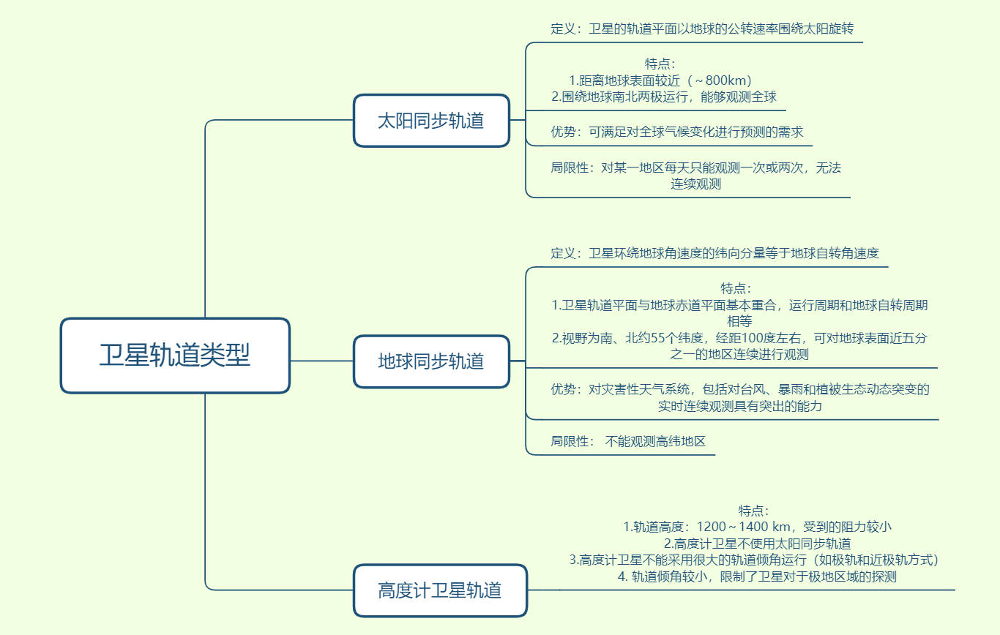
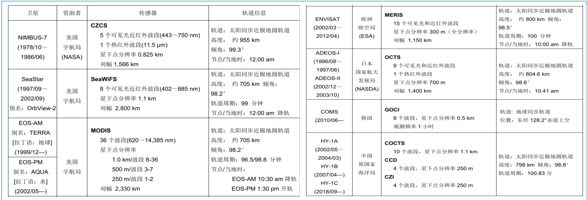
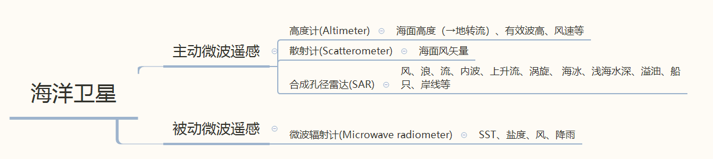
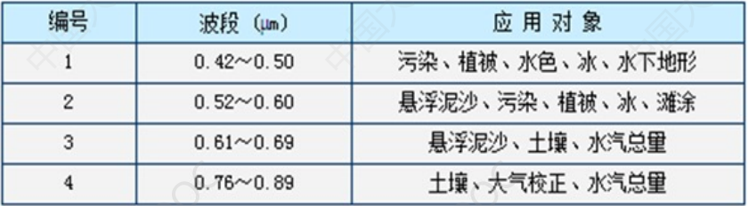
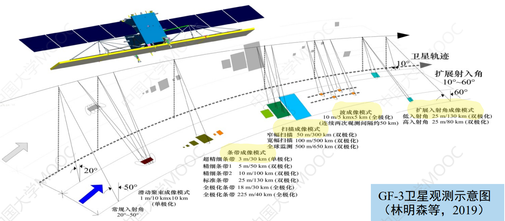
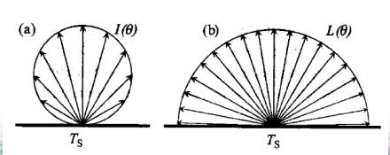
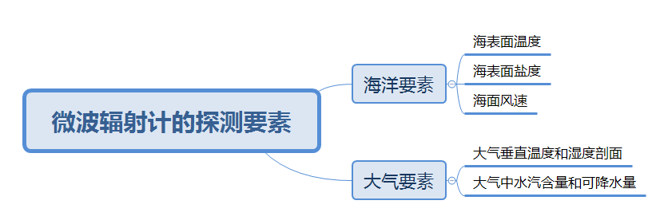
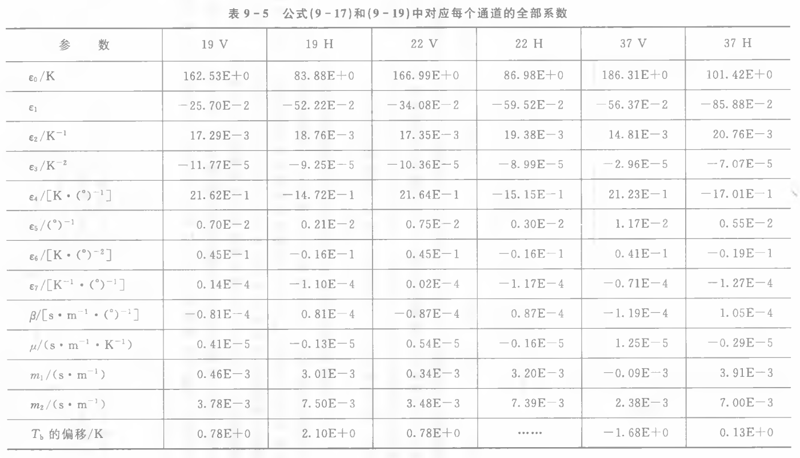
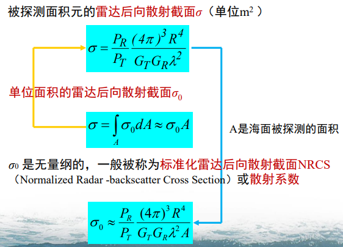

卫星海洋学mooc学习
此为笔者在学习河海大学徐青老师等的mooc《卫星海洋学》时做的一些整理，遇到不懂的地方会参考中国海洋大学刘玉光等的《卫星海洋学》和蒋兴伟院士组织翻译的西利·马丁的《海洋遥感导论》的相关内容。
1 绪论
1.2 遥感技术
| Type/Window | Visible | Infrared | Microwave |
|---|---|---|---|
| Passive | X | X | X |
| Active | X |
2 卫星轨道与分辨率
2.1 卫星轨道(1)

2.2 卫星轨道(2)
重复周期
传感器的再访问时间≤传感器的重复周期≤卫星的重复周期
卫星的重复周期(repeat period)
卫星从某地上空开始运行,环绕地球多圈后回到原地上空时所需要的时间
传感器的重复周期(repeat period of sensor)
卫星装载的传感器对目标完成一次全球覆盖的时间
传感器的再访问时间(revisit time)
地球上某一局部地点被传感器先后两次观测的时间区间
3 气象卫星与水色卫星
3.1 气象卫星和主要传感器
3.2 水色卫星和主要传感器

4 海洋卫星
4.1 海洋卫星简介

高度计
搭载高度计的卫星，黄色部分为高度计专用卫星，运行在高度计卫星轨道：
散射计
与高度计不同，散射计为宽刈幅主动雷达。

装载散射计的卫星，黄色部分在轨运行
SAR卫星
微波辐射计
4.2 中国海洋卫星的发展
- 均为太阳同步极轨卫星
- 风云三号系列气象卫星上也装载了兼具全球水色观测能力的中分辨率成像光谱仪
海洋水色卫星：HY-1卫星
HY-1A
中国第一颗用于海洋水色探测的试验型业务卫星
十波段海洋水色扫描仪（COCTS）——星下点分辨率1.1km

四波段海岸带成像仪CZI_——星下点分辨率250m

HY-1B
1A的后续星
COCTS幅宽增加到3000 km,重复观测周期由3天缩短为1天
- CZI的光谱分辨率由80nm提升至20nm
HY-1C
- 1C/D卫星工程上采用上、下午卫星组网，可增加观测次数，提高全球覆盖能力
- 有效载荷：
- 十波段海洋水色扫描仪COCTS：信噪比大幅提升
- 四波段海岸带成像仪CZl
- 分辨率由250m提高至50m
- 刈幅由500km扩展至1000km
- 紫外成像仪
- 星上定标光谱仪
- 船舶自动识别系统
- 卫星技术状态达到了国际先进水平,使中国成为继美国之后,能提供每天全球海洋空间全覆盖海洋水色卫星资料的国家。
海洋动力环境卫星：HY-2卫星
HY-2A
我国第一颗海洋动力环境卫星
有效载荷：
雷达高度计

微波散射计
扫描微波辐射计
HY-2B
- 我国第二颗海洋动力环境卫星
- 有效载荷（相比于2A）：
- +数据收集系统
- +船舶自动识别系统AIS
CFOSAT
中法两国合作研制的首颗卫星
中国提供：
法国提供：
海洋监视监测卫星：GF-3卫星
中国首颗分辨率达到1m的民用C波段多极化SAR卫星
特点：
- 多模式:具有12种成像模式,在轨SAR卫星中成像模式最多
- 高空间分辨率：最高为1米
- 宽测绘带:最大幅宽650 km
- 多极化:单、双、四极化方式
- 长寿命:设计寿命为8年
- 高技术指标:主要设计指标达到或超过国际在轨同类卫星水平
卫星观测示意图：

5 电磁辐射
5.1 电磁波的波段与波动方程
电磁波的波段
- 热红外对应地表辐射
微波波段

复折射率n
- 实部$n’$表示电磁波在两介质的界面传播速度和方向的变化
- 虚部$n’’$表示电磁波在介质内部传播的衰减程度
5.2 辐射术语 ①
5.2.1 极化(Polarization)
定义：如果一束平面电磁波的电场矢量都在一个平面内,则称之为线性极化或线性偏振的。
任何线性极化的电磁波都可分解为两个部分:
- 水平极化(horizontal polarization)
- 垂直极化(vertical polarization)
极化状态根据电场方向与参考平面的关系来定义
参考平面：由两条直线确定,一条是海表面的垂线OZ,另一条是入射或离开海面的电磁波束所在的直线
- 水平极化：电场矢量与参考平面垂直
- 垂直极化：电场矢量位于参考平面内或与参考平面平行
5.2.2 立体角(Solid Angle of Observation)和观测的天顶角
- 图5-2显示了立体角的定义。如图所示,A代表波源，dA 代表辐射电磁波的微分面积元。假设电磁波从波源 dA 自发辐射，到达半径为R的球面的一个波束对应着一个立体角微分元。该立体角微分元对应的小面积元是：
立体角的微分 $\text{d}\Omega$ 被表达为
式中立体角$\varOmega$。采用立体角弧度 sr 作为它的单位。一个球面的立体角是
观测的方位角（azimuth angle）𝜑： 卫星观测方向在海面投影与X方向的夹角
观测/卫星的天顶角（zenith angle of observation）θ： 卫星观测方向与被观测海面法线之间的夹角
卫星/观测的天顶角(satellite zenith angle) b
描述卫星观测方向与被观测海面法线之间的夹角(对雷达,也称入射角)
太阳天顶角(solar zenith angle) c
代表太阳到被观测海面的光束方向与被观测海面法线之间的夹角
观测角/入射角(view angle) a
描述卫星观测方向与星下点海面法线之间的夹角
5.3 辐射术语 ②
5.3.1 辐射专业术语
辐射能 Q（Radiant Energy）
辐射能量的多少，单位：焦耳 [J]
辐射通量 Φ （Radiant Flux）
单位时间里通过一个面积的能量，单位是 W(瓦特，$1\text{W}=1\text{J}\cdot \text{s}^{-1}$),即
辐射强度 I
点光源在特定方向上单位立体角的辐射通量，单位是 $\text{W}\cdot \text{sr}^{-1}$，即
辐亮度 L
沿辐射方向单位面积和单位立体角的辐射通量
式中 $\theta$ 是观测的天顶角，$dAcos\theta$ 是与波束方向垂直的面积元。辐亮度 $L$ 的单位是 $\text{W}\cdot \text{m}^2\cdot \text{sr}^{-1}$。
对于本概念的形象理解参考：tab 海洋遥感导论(修订版)
摘自《海洋遥感导论(修订版)》P83-85
辐亮度(radiance) $L$ 单位是 $\text{W/}\left( \text{m}^2\cdot \text{sr} \right)$ ,定义为在某一特定方向上 $\text{d}\Omega$ 立体角内入射或离开一个平面的辐射通量。辐亮度是一个比较难理解但又很重要的概念。它的价值在于描述了从任意方向指向一个平面的管筒收集到的辐射通量,这正是描述卫星传感器观测地球表面的方法之一。从一个与辐射传播方向夹角为 $\theta$ 的微分面元 $\text{d}A$ 出射或入射的能量通量,可以写成:
图3.8给出了一个管状辐亮度计(注:也称为辐射计)指向一个表面的示意图。这个仪器捕获从面元 $\Delta A$ 发射或反射的在立体角 $\Delta \Omega$ 内传输的辐亮度,面元 $\Delta A$ 的法线相对仪器观测方向倾斜一个角度 $\theta$ ,其中 $\Delta A\cos \theta$ 是面元在观测方向的面积分量。由式 (3.15) 可知入射到探测器上的辐亮度是:
在海洋学上具有重要意义的几个表面辐亮度均与观测角度无关,使用这个术语有很多方便之处,因此辐亮度这个概念将在以后的章节里频繁使用。
传统上,发射的辐射能量称作辐亮度,用符号 $L$ 表示;入射辐亮度称作亮度(brightness),用符号 $B$ 表示。这些参数常常与方向无关,亮度 $B$ 在被动微波辐射测量中既用于入射也用于出射辐射,辐亮度 $L$ 也类似地用在海洋水色观测中。如图3.8所示,对于类似望远镜的仪器,在不同的倾角观测海面,并在一个特定的立体角内收集光线或辐射,辐亮度正是一个合适的描述。对在自由空间中的传输,仅用 $\theta=0$ 时的辐亮度,被称作场辐亮度(field radiance)。
辐亮度的概念可能在理解上比较困难。为了对辐亮度进行更好地理解,以下各节首先讨论一些辐射表面有用的近似、定义和特性,然后使用辐亮度描述理想光学仪器的操作并以例子进行小结。如以下各节所示,辐亮度可以被理解为是由一个朝向延展平面的管筒收集到的辐射通量,辐亮度是应用于这一概念的自然单位,且其对应于由一个卫星传感器收集到的辐射通量。
辐照度 E
单位面积的辐射通量
根据定义，辐照度 $E$ 与辐亮度 $L$ 的关系是：
对于本概念的形象理解参考：tab 海洋遥感导论(修订版)
摘自《海洋遥感导论(修订版)》P82-83
本书主要使用的是平面辐照度，其由各个方向人射到平面上侧或从平面下侧出射的通量构成，某一方向的通量对平面辐照度的贡献权重为其与该平面垂线方向的夹角余弦。平面辐照度就是 一个平板传感器收集到的辐射。
想象一个放置在海洋表面的 1$\text{m}^2$ 的平板，收集入射到它上面的所有辐射。 图3.6中给出了一个平板收集器的示例，它测量平面辐照度通常被称为余弦收集器(cosine collector)。具体观测原理如下：如果一束平面平行辐射垂直入射到一个平面上，那么一个面积为 $\Delta A$ 的面元接收到的辐照度为 $\Delta \Phi /\Delta A$ 但是如果这个平面相对于垂直于光束方向有夹角 $\theta$ 那么与光线垂直的$\Delta A$ 分量 以 $cos\theta$ 减小，因此入射到M的辐照度也以 $cos\theta$ 减少(图3.7)。因为这个原因, 虽然一个平板收集器接收上半平面所有方向的辐射，但法线以外方向的辐射权重是 $cos\theta$ 。最后，在处理海面以上和以下的可见光辐射时，平面辐照度又可分为向上辐照度 $E_u$ 和向下辐照度 $E_d$。
发射率 e(λ) (emissivity)
定义：
在更细致的研究中，发射率可以被定义为物体发射的辐亮度 $L(\lambda,\theta,\varphi)$ 与具有相同温度的黑体发射的辐亮度 $L_{black}\left( \lambda ,\theta ,\varphi \right)$ 之比：
公式（5-21）定义的发射率在遥感学科中有广泛的用途。发射率的这一定义是基尔霍夫（Kirchoff）在19世纪总结出的，公式（5-21） 在许多物理教科书中被称为基尔霍夫定律。
- $L\left( \lambda ,\theta ,\varphi ,T \right) \mid_{BLACK}^{}$ 代表与灰体具有相同温度T的黑体自发辐射的辐亮度 —- 可通过普朗克定律计算
- 灰体的发射率 —- 可通过菲涅耳反射率计算 $e(\lambda, \theta, \varphi)=1-\rho(\lambda, \theta, \varphi)$
上述公式能够解释许多海洋大气的遥感理论问题， 是目前海洋遥感最常见的公式之一
5.3.2 朗伯表面(Lambert surface)
使用 $L$ 代表一个物体表面自发辐射或者反射的电磁波的辐亮度。如果 $L$ 不是 $\varphi$ 和 $\theta$ 的函数，这样的表面被称为朗伯表面(Lambert surface) 。
朗伯定律 (Lambert law) 表达的事实是：朗伯表面从不同方向看是一样亮的。对应于面积是 $A$ 的朗伯表面，辐射通量是
朗伯表面自发辐射或反射的辐亮度是
朗伯表面自发辐射或反射的辐照度是
由(5 -30)式和(5 -31)式可知，朗伯表面反射的辐照度与辐亮度之比等于 $\pi$。
具有朗伯表面的辐射物体也称为余弦辐射体(cosine radiator)。公式(5 -30) 表明，余弦辐射体的辐亮度L在各方向上相等且与 $\theta$ 无关；但是，余弦辐射体的辐射强度 $I(\theta)$ 与 $\theta$ 的余弦有关：
所以，朗伯定律也称为朗伯余弦定律(Lambert cosine law) 。

只有黑体（发射率 $e=1$）才是完全理想的余弦辐射体，其表面才是理想的朗伯表面
在可见光和红外波段，具有粗糙表面的自身发射体和被照射的散射体接近于余弦辐射体，即，在这些波段，物体表面自发辐射的电磁波或者反射的电磁波可以认为是各向同性的——海洋遥感的基本理论依据之一
摘自《海洋遥感导论(修订版)》P85
朗伯面具有出射辐亮度与方向无关的有用特性，如本章和后续章节所示, 这些表面在可见光与红外海洋遥感领域具有特别的重要性。朗伯面这个术语也可用于反射体，例如，泡沫和云可以认为是朗伯的或太阳光的朗伯反射体， 即在可见光与红外（VIR）波段内，反射的辐亮度在很大的观测角范围内与方向无关。对于一个平面朗伯面来说，辐照度 $E$ 和辐亮度 $L$ 之间存在一个简单的关系，可通过上半平面 $L$ 的积分计算 $E$ 即：
注：原书中有错 $\theta$—>$\varphi$
5.4 基尔霍夫定律
基尔霍夫定律(Kirchhoff,1859)基本表达:
如果介质处于局部热力学平衡条件下，那么它吸收能量的速率和辐射能量的速率相等，即
- 既可应用于两介质界面处，也可应用于某介质内部
- 基尔霍夫定律是海表面物理量遥感机理的基础之一
- 地球表面温度变化的时间尺度 >> 遥感仪器的一次测量需要的时间区间，因此，在遥感计算中，地球表面的局部热力学平衡条件得到普遍满足。
推广公式 1—适用于两介质界面处
- $e$ 为发射率，$\rho$ 为菲涅尔反射率
- 此公式仅适用于两介质界面处，它表达在局部热力学平衡条件下，除掉反射的部分以外，所有吸收的能量都被发射出去了
- 在海表面温度、海表面盐度和海面风的遥感中，经常使用这个公式，在海洋遥感中是极其重要的定律，是海表面物理量遥感机理的基础之一。
推广公式 2—适用于介质内部
- 此公式仅适用于介质内部
- 它表现了大气吸收带的发射率特征，可应用于大气垂直剖面温度和湿度的遥感
5.5 黑体辐射
5.5.1 黑体(Blackbody)
黑体：发射率 $e=1$ 的理想辐射体
灰体：物体的发射率 $e<1$，其发射率 $e$ 俗称灰度
- 在可见光和近红外波段
- 地球和太阳表面的发射率接近1
- 地球和太阳可以近似地看作黑体
- 但是，由于较高的精度要求，光学遥感中不能将地球当做黑体
- 微波波段
- 地球表面的发射率明显小于1
- 微波遥感中，更不能将地球当做黑体
灰体自发辐射的辐亮度：
5.5.2 普朗克定律 （Planck Law ）
黑体发射的辐亮度是其温度和所辐射的电磁波波长（或频率）的函数，定量地描述了黑体自发辐射的辐亮度

5.5.3 亮温（Brightness Temperature）
如果已知海面发射的辐亮度，那么直接代入普朗克辐射定律经过计算可以获得一个黑体等效辐射温度（blackbody equivalent radiometric temperature）这样获得的温度不是真实的海表面温度（SST）,它被称为海面亮温（brightness temperature）,或称为黑体温度（blackbody temperature）$T_B$ 。欲获得真实的海表面温度，除了从卫星遥感获得的辐亮度要经过大气校正以外，还要在计算中考虑到海水的灰度，即海面发射率。
频率低于300 GHz的微波满足瑞利-金斯定律的适用条件。设 $T_{sst}$ 代表海表面一个薄层海水的温度。将瑞利-金斯定律（5-42）式代入公式（5-37）,获得

式中处 $T\left( \lambda ,\theta ,\varphi ,T{SST} \right)$ 代表 海表面之上 的微波辐射计能够探测到的亮温，或者翻译为亮度温度，它是波长、海表面的热力学温度和立体角的函数。$T{sst}$ 是海表面一个薄层海水的温度，它代表海表面皮层的物理温度或热力学温度，当然它与常规水桶采水法在一定深度取水测得的海表面温度略有差别。如果微波辐射计位于海表面之上某一个足够高的观测平台例如卫星上，还要考虑大气校正。
在可见光和红外波段，海水接近于黑体，海水的发射率是一个接近1的常数。根据公式（5-37）,将卫星辐射计某通道探测的辐亮度 $L\left( \lambda ,\theta ,\varphi \right)$ 除以发射率 $e\left( \lambda ,\theta ,\varphi \right)$ 可获得与海水具有相同温度的黑体自发辐射的辐亮度 $L{black}\left( \lambda ,\theta ,\varphi \right)$ 。因为海水在可见光和红外波段的发射率 $e\left( \lambda ,\theta ,\varphi \right)$ 非常接近于1, 所以，可见光和红外通道探测的辐亮度 $L\left( \lambda ,\theta ,\varphi \right)$ 接近于与海水具有相同温度的黑体自发辐射的辐亮度 $L{black}\left( \lambda ,\theta ,\varphi \right)$ ,这些通道探测的亮温接近于真实的海表面温度。然而，海水在微波波段的发射率 $e\left( \lambda ,\theta ,\varphi \right)$ 非常小，微波通道探测的亮温与真实的海表面温度相差极大。
在某些文献中，许多作者习惯于将传感器某通道探测的海面亮温称为该通道的黑体温度。这是先假定探测目标是黑体，然后将探测目标自发辐射的辐亮度代入黑体辐射定律计算获得的温度。所以，黑体温度也不是真实的目标温度。 在热红外辐射计反演海表面温度的多通道经验算法中，需要多通道测量的黑体温度作为算法的输入数据，输出的海表面温度才是真实的海表面温度。
5.6 菲涅耳反射率（Fresnel Reflectance）
5.6.1 菲涅耳公式（Fresnel Formula）
水平极化
垂直极化
$\theta_i$：入射角，$\theta_t$：投射角
$\mu_1$和$\mu_2$：介质1和介质2的相对磁导率
$n_1$和$n_2$：介质1和介质2的复折射率
$n=n^{‘}-in^{‘’}$：$n^{‘}$代表电磁波的折射率，$n^{‘’}$代表电磁波的衰减
复折射率 $n=\sqrt{\varepsilon_r\mu_r}\approx\sqrt{\varepsilon_r}$
对于可见光，在推导菲涅耳公式时可以忽略在上述介质中的衰减，并因此忽略复折射率的虚部。
然而，微波在淡水和海水等介质内传播时衰减很大，不能忽略微波在这些介质中传播中的衰减，故不能忽略复折射率的虚部。
5.6.2 菲涅耳反射率（Fresnel Reflectance）
菲涅耳反射率$ρ$：反射电磁波的辐亮度与入射电磁波的辐亮度之比
菲涅耳反射率的普适表达式（Xu et al., 2004）
海-气界面处：
$\varepsilon_{r1}=1,n_1=(n_1)^{‘}=1$ 大气
$\varepsilon_{r2}=\varepsilon_r,n_2=n,(n_2)^{‘}=n^{‘}$ 海水
海-气界面处+可见光和近红外波段：
$n_2\approx(n_2)^{‘}$
菲涅耳反射率的传统表达式，只适用于可见光和近红外波段, 对微波波段不适用
6 散射和吸收
6.1 描述衰减的术语
复折射率
表达式：
- 实部 $\boldsymbol{n}^{‘}$的物理含义（Snell折射定律）:$n’$ 描述电磁波在两介质的界面传播速度和方向的变化。
- 虚部 $n’’$ 的物理含义（由电磁波波动方程推导）：电磁波在介质内部传播的衰减程度。
► 微波波段的复折射率（从德拜方程获得，其他波段，需从实验获取）:
► 与热红外波段和微波波段相比，纯水在可见光波段的复折射率虚部很小，意味着衰减更慢，传播的更远。
皮层深度（Skin Depth）
$d_{skin}$ 定义：若 $z=d$ 处电场强度衰减为初始值的 $1/e$，那么从 $z=0$ 到 $z=d$ 的距离为皮层深度。
- 使用辐射计遥感探测的只是海洋的皮层温度。
皮层深度的物理意义？
只有接近海面非常薄的水层的水分子发射的电磁波能够溢出水面,所以表面薄层水分子的平均温度决定了海表面的辐射强度，代表了热红外辐射计或者微波辐射计探测的海表面温度。
使用辐射计遥感探测的只是海洋的皮层温度。与依靠浮标或水桶法在水下大约0.3~1m处测量的次表层体积海表面温度有不可忽略的差异。
图(a)表示无论夜间还是白天，当强风（U10 >6 m/s） 时充分混合的上表层温度剖面；图(b)表示在白天强日照和弱风条件下层化的上表层温度剖面。
$T_{11µm}$ ：波长11 µm的热红外光辐射计测量的温度
$T_{10GHz}$ ：频率为10GHz的微波辐射计测量的温度
$T_b$：浮标测量的温度
$T_s$ ：海表面温度
$ΔT$ ：$|T_s-T_b|$ 三条黑色线段分别代表对以上三个测量温度有贡献的海水厚度层；
穿透深度（Penetration Depth）
定义：辐照度衰减为初始值的 $1/e$ 所在的深度， 用 $Z_{90}$ 表示。
- 用于描述可见光和红外光在海水中的衰减。
- 因为辐照度（电磁波能量）与电场强度的平方成比例，所以辐照度的衰减系数$%是电场强度 衰减系数$ $k_a$ 是电场强度的两倍
穿透深度有多深呢？
穿透深度与水体组成成分、波长有关
比较清澈的南海某海域
| 波段 | 穿透深度 |
| :————————————-: | :———: |
| 490nm(蓝绿光) | 30m |
| 430~480nm(蓝)/500~580nm(绿) | 20m |
| 400~430nm/590~610nm | 10m |
| 620~700nm(红) | 1~3m |浑浊水域，比如渤海，490nm的平均穿透深度仅在7m左右；
高浑浊水域（河口），所有波长的穿透深度都在1米以内。
衰减系数（ Attenuation Coefficient）
定义: 可由朗伯-比尔透射定律的微分形式计算
衰减系数描述电磁波在传播中由于介质吸收和散射产生的衰减程度; 用 $k_a(\lambda)$ 表示。
衰减系数表示为吸收系数和散射系数之和，描述介质的固有光学性质。
光学厚度（Optical Thickness）
定义：衰减系数沿传播路径上的积分，用 $\tau _a$ 表示
$\tau _a$ 称为从位置 $z_0$ 到 $z$ 的光学厚度(optical thickness) ， 没有量纲， $z_0$ 和 $z$ 是介质中电磁波传播路径的边界。
体积散射函数（Volume Scattering Function)
体积散射函数 $β$ 用于描述散射系数的立体角分布，单位是 $m^{-1}\cdot sr^{-1}$
定义式：
$\varPhi$ 是入射辐射通量，$\varPhi_{sc}$ 是散射引起的辐射通量，$d\varOmega$ 是立体角的微分。
体积散射系数：
米氏散射和瑞利散射
散射：由于介质中存在的微小粒子或介质分子对光的作用，使光束偏离原来的传播方向而向四周传播的现象。
瑞利散射是由极小微粒（例如尺度远小于可见光波长的气体分子和水分子，或者尺度远小于微波波长的气溶胶粒子）产生的散射。
依据公式（省略）,瑞利散射的强度与波长的四次方成反比。已知可见光的波长范围是400 nm（蓝紫光）到700 nm（红光），红光波长是蓝紫光波长的1. 75倍，因此蓝紫光散射强度接近红光散射强度的十倍。 在太阳光谱中蓝光波段的能量远大于紫光波段的能量，加上大气中的分子（氮气和氧气分子）对蓝光的瑞利散射效应，所以我们通过散射光看到的天空是蓝色的。
6.2 辐射传输方程
6.2.1 大气辐射传输方程
6.2.2 有边界的辐射传输方程
6.2.3 大气窗
定义：大气透过率比较大的波段
波段3.7～4.1µm和10～12µm存在两个热红外窗口，是用于星载辐射计探测海面温度的重要波段。
- 大气窗的分布是传感器设计的重要依据：
- 探测海面的传感器的波段必须设计在大气窗内
- 探测大气温度或湿度垂直分布的传感器应该至少有一个波段设计在大气窗外， 即选择大气窗外氧气或水蒸气的某一个吸收带。
- 大气成分对不同波段电磁波衰减的主要作用：
- 在可见光和红外波段：
- 辐射衰减的第一因素：气溶胶散射
- 辐射衰减的第二因素：水蒸气吸收
- 次要因素：臭氧吸收
- 在微波波段：
- 辐射衰减的第一因素：水蒸气吸收
- 辐射衰减的第二因素：氧气吸收
- 辐射衰减的可忽略因素：气溶胶散射
- 在可见光和红外波段：
9 微波辐射计遥感原理与应用
9.1 微波辐射计
9.1.1 微波辐射计的特点
优点：
- 全天候观测
- 瑞利-金斯定律 $L\left( f \right) \cong \left( 2f^2k_b/c^2 \right) T$
局限性：
- 地球表面自发辐射的微波能量比热红外波段低—>设计水平和工艺水平要求更高
- 空间分辨率较热红外辐射计低 $\sim \frac{\lambda H}{D}$
微波辐射计的探测要素

9.1.2 典型的微波辐射计及分类
按测量目的分类：
9.2 海面的微波发射率
9.2.1 平静海面的微波发射率
微波测量海表面盐度：
- 首选频率：L波段1.4GHz
- 首选极化状态：垂直极化
- 首选观测角：0～10°
上述条件下，天线探测的亮温几乎不受海面风速和海浪的影响
9.2.2 粗糙海面的微波发射率
辐射计接收到的海面辐射用辐亮度 $L$ 表示。根据瑞利-金斯定律，辐亮度在微波波段与温度呈线性关系。在不考虑大气校正时，辐射计探测到的海面亮温 $T_b$ 与海表面温度 $T$,有下列关系：
式中，$e\left( \theta ,f,\xi ,Ts,S,U{10},\varphi \right)$ 代表粗糙海面发射率(rough sea surface emissivity)，它是卫星观测角 $\theta$ 、微波频率 $f$、辐射计极化状态 $\xi$ 、海表面温度 $Ts$、海表面盐度 $S_s$、海面以上10m高处的风速 $U{10}$ 和风向 $\varphi$ 的函数。
9.2.3 基于小斜率近似的海面发射率模型
真实海洋的微波辐射:
由平静海面的辐射以及其上覆盖的海浪的辐射共同组成。
粗糙海面的海面亮温 $T_b$ 可表示为：
式中，$Ts$ 是海表面温度。海面发射率 $e$ 与海水的复相对电容率有关，后者与海水的温度和盐度有关。$e_0$ 是平静海面的发射率，它可由基尔霍夫定律、菲涅耳反射率 $\rho$ 和关于海水的复相对电容率 $\varepsilon_r$ 的德拜方程计算获得。我们已知，平静海面的发射率是海水温度、盐度、电磁波极化状态和观测角的函数。由于风产生的海面粗糙度引起海面发射率和海面亮温发生变化。我们使用 $\Delta e$ 代表风所引起的海面发射率变化，使用 $\Delta T{h,v}=\Delta T_s$ 代表风所引起的海面亮温变化，这里下角标 $h$ 和 $v$ 分别代表电磁波的水平和垂直极化状态。
基于小斜率近似的海面发射率模型，海面盐度遥感的一些初步结论：
粗糙海面的亮温不仅是海表面温度和海表面盐度的函数，而且是海面风速和风向的函数。
风速对 $\Delta T_h$ 和 $\Delta T_v$ 的影响与海表面温、盐的影响可以分开考虑。
- 使用较小的天顶角（ θ ≤20°）探测海面可消除风向对盐度反演的影响。
- 使用双极化微波辐射计探测的海面亮温之和来反演海表面盐度，有利于消除风向的干扰，减少风向不确定性造成的反演误差，提高海表面盐度的反演精度。
9.2.4 海面发射率的SSM/I算法
根据公式(9 -13),如果已知微波辐射计探测到的海面亮温数据和对应的浮标现场测量数据，使用统计分析方法可以获得在微波辐射计各个波段的海面发射率与风速、海表面温度以及观测角的函数关系。依据该多波段函数关系，可以反演海上风速和海表面温度，故称之为SSM/I(special sensor microwave/imager)的海面发射率模型。例如，Wentz(1997)提出的SSM/I的海面发射率算法是
式中，$e_0$ 是平静海面的发射率；$\Delta e$ 代表风所引起的海面发射率变化。
平静海面的发射率 $e$ 可由德拜方程计算获得。根据德拜方程可知，平静海面的发射率是海水温度、盐度、电磁波极化状态和观测角的函数。根据第五章第四节阐述的基尔霍夫定律和第五章第七节关于菲涅耳反射率的图示可知，当辐射计频率超过5〜7 GHz时，平静海面的菲涅耳反射率 $\rho$ 和发射率 $e$。与海表面盐度无关，只与海表面温度和风引起的海面粗糙度有关。对平静海面发射率的理论公式做关于温度和观测角的多项式拟合，Wentz(1997)获得了平静海面发射率 $e_0$ 的公式，即
式中，海表面温度 $T_s$ ，的单位是K，海表面温度 $t$ 的单位是 $°C$，$t/°C=T_s/\text{K}-273.16$；观测角因子 $q=\theta-51°$，公式的适用范围是 $48°<\theta<55°$。SSM/I在四个波段设有7个通道，其中在前三个波段的5个通道是 (19.35v，19.35h，22.235v，37.0v，37. 0h)。表 9-5 列出了上述公式对应每个通道的全部系数 $(\varepsilon_0,\varepsilon_1,\varepsilon_2,\varepsilon_3,\varepsilon_4,\varepsilon_5,\varepsilon_6,\varepsilon_7)$，表中 $162. 53\text{E}+0$ 代表 $162.53\times10^0$，$-25.70\text{E}-2$ 代表 $-25.70\times10^{-2}$。

在 $48°<\theta<55°$的条件下，风所引起的海面发射率变化 $\Delta e$ 的计算公式是(Wentz,1997)
表 9-5 还列出了上述公式中对应每个通道的全部系数 $(\beta,\mu,m_1,m_2)$，表中最后一行列出了将SSM/I的海面发射率算法的计算结果代入公式(9-16)和 (9-11)获得的海面亮温 $T_b$ 的偏移。因为真实的SSM/I没有“22H”通道，所以该通道对应的海面亮温 $T_b$ 的偏移项为空白。
9.3 海面温度和风速的反演算法
9.3.1 微波辐射计的SST反演算法
D-矩阵方法（D-matrix method）（统计的逆方法）
假定SST与各个通道探测的亮温之间有简单的线性关系， 可应用于多种微波辐射计反演海表面温度。
9.3.2 微波辐射计的海面风速反演算法
SSM/I海面风速ERT算法 （美国环境研究和技术公司）—> SSM/I-GSW算法（Goodberlet,1989）—> SSM/I-GSWP算法（Petty，1993）
10 散射计遥感原理与应用
10.1 散射计
Remote Sensing System网站整合了部分散射计和微波辐射计的风场产品，并提供沿轨风场产品的预览图，方便大家快速查询与下载，例如，如果我们想知道2019年9月1日ASCAT观测的某个海域的风场状况，输入日期和区域就可以看到ASCAT当天升轨或降轨运行时所观测的海面风场。
Remote Sensing System10.2 标准化雷达后向散射截面

由于 $σ_0$ 变化范围太大，经常用 $σ_0[\text{dB}]$表示
式中左侧代表用dB（分贝）表达的 σ0 [dB]，右侧代表原始定义的 $𝜎_0$
例如，如果𝜎0是100，$𝜎_0$ [dB]就是20；如果 $𝜎_0$ 是0.001，$𝜎_0$ [dB]就是–30
注意，分贝（dB）仅仅是数学单位，它不代表物理上的量纲
10.3 电磁波在粗糙海面的散射
两尺度散射模型（Two-Scale Scattering Model）
考虑到海面上长波和短波这两个尺度波浪的客观存在，学者们发展了组合的表面散射模型（Composite-surface scattering model）来计算Bragg散射产生的NRCS，也称两尺度散射模型（Two-scale scattering model）
10.4 海面风反演模型
散射计风场反演精度：
► 中低风速范围内（4-24 m/s），风速反演精度优于 2m/s，相对平均误差达到10%
► 风向反演精度优于20°
CMOD5.N经验模型 (Hersbach, 2010)
$\varphi$ 是观测方位角，即海面风向与雷达视向之间的夹角
$B_0、B_1、B_2$ 为系数，由海面风速、雷达入射角确定